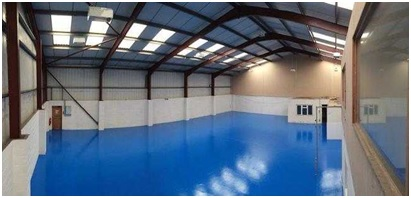
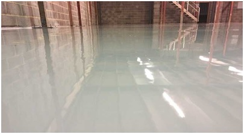
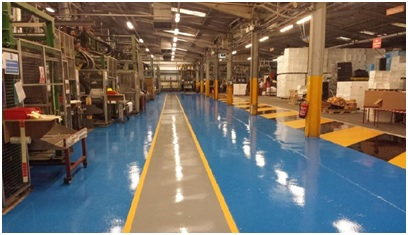

Flooring Epoxy Resin
Epoxy flooring is made up of two main components – resins and hardeners. When these two components are combined, a chemical reaction takes place that forms a rigid epoxy material. This epoxy material bonds with the substrate. When it cures, it provides a strong, hard-wearing coating that protects concrete from both mechanical and chemical stress.The concrete is no longer porous, making it easy to clean.


Benefits of Epoxy Flooring
- Hard-wearing and durable – resistant to wear even in high traffic areas and industrial environments
- Attractive fashionable finish – epoxy comes in a range of different colours and finishes, which can be used by professional installers to create designs & patterns to match your style requirements.
- Non-dusting – can be applied over concrete floors to prevent issues with concrete dust in unsealed floors
- Damp Proof Membranes – for installation where a DPM has never been installed or has broken down over time
- Provides a smooth and even surface
- Easy to clean – low maintenance floor option
- Affordable – a cost effective flooring option. Click to find out more about the costs of epoxy flooring
- Highly resistant to chemicals – chemically resistant even to potent chemicals
- Heat and water-resistant
- Safe – anti-slip properties & resistant to extreme impact
Applications
Epoxy resin flooring can be used for both commercial and residential purposes. There are several key considerations when using it in different situations. It may be that you need a higher grade flooring in some industrial settings and that epoxy flooring isn’t suitable in all domestic settings.
- Commercial Uses
- Warehouses & Industrial Units
- Gyms
- Offices
- Residential Uses
- Garages
- Kitchens
- Basements
Epoxy Flooring Installation
1. Preparation
Floors Should Be Prepared
To install epoxy floor coating, you will need to prepare the surface of the room first. There are two suitable methods to do that, which are diamond-grinding and sanding. You can use a floor grinder that can polish concrete floors. For surfaces that are contaminated with any kind of liquid, you may need to apply chemical cleaning in order to remove the stains.
Remove Dust Particles
After grinding the surface, you will need to remove all of the dust that the floor grinder created. Sweep up the floor to gather most of the dirt and clear it away from the area. To extract the small dust particles remaining on the prepared ground, you will need to use an industrial vacuum. This must be done in order to apply less primer. If you leave a lot of particles on the surface, it will be trapped within the epoxy coat and will have less durability.
2. Base Coat
Apply Epoxy Primer
After removing most of the dust particles, it is time to prime the floor with the epoxy primer . It is highly recommended to administer this step because it can give your surface a longer life. It can give better adhesion to the main layer, which is the epoxy coating. The substrate will be sealed with priming, which results in the elimination of unnecessary gasses and bubbles.
Before applying the epoxy primer, make sure the room is well ventilated. To properly seal the surface, always coat two layers of the product. An electrical mixer is recommended in order to mix the two components of the application well.
We recommend using a DECOCOAT Primer if the concrete slab may be contaminated in any way. The primer is applied before the epoxy floor coating and helps ensure the main floor coating bonds well. On a clean floor you can use this as a primer. As this is a low viscous product, it has better penetration into the concrete. You can then use the DECOCOAT Top Coat Floor Coating to add the hard-wearing and high gloss finish.
3. Topcoat
Remember to mix the components properly because the result will define its durability. Weak and tacky coatings are the product of a poor fusion of contents.
Use a Roller for Product Application
To apply the epoxy coating on your floor, you should use a good quality roller that can last a long time. Poor quality ones tend to shed, which could damage the application. Re-coat the ground after 24 hours. If you see any cracks or holes after the first process, seal them up with the proper materials before the next coat. Surfaces that look uneven should be sanded first with the right tool.
Apply Final Coat
After reviewing the surface for issues like cracks and holes, you can now administer the final coat. Make sure to mix only one bucket at a time due to the epoxy floor coating’s short pot life.
A minimum of two coats is advisable for the best coverage and colour results. You should also use the correct primer if the surface is contaminated.
If your concrete is entirely free from oil and any other contaminates, you can use one coat of the standard epoxy and one coat of HB.
- DECOCOAT Primer – 50 microns
- DECOCOAT Top Coat - 2 to 3 mm